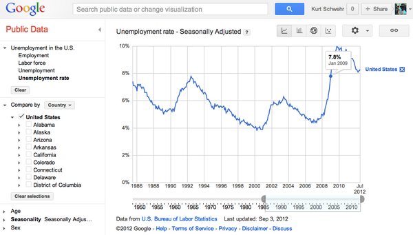
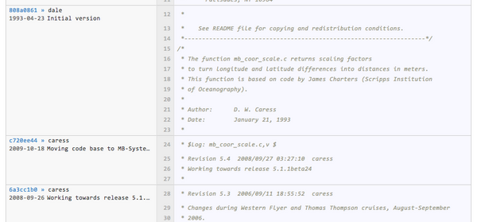
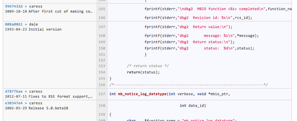

09.26.2012 08:00
Google Oceans goes to the Great Barrier Reef
Jenifer and BAM kicked off an awesome
release for Google Oceans yesterday!
Dive into the Great Barrier Reef with the first underwater panoramas in Google Maps
Dive into the Great Barrier Reef with the first underwater panoramas in Google Maps
09.20.2012 21:27
Surprising python logical operation behavior
I ran into some trouble in some
existing code and it took me a long time to figure out what exactly
was wrong.
09.19.2012 12:02
Using Chrome to control a drone quadcopter
I think the Chrome team is having too
much fun
09.15.2012 15:25
Google Tech Papers
Add another interesting tech paper to
the collection of big google technologies:
Oct 2012: Spanner: Google's Globally-Distributed Database
2011: Megastore: Providing Scalable, Highly Available Storage for Interactive Services
2006: Bigtable: A Distributed Storage System for Structured Data
2004: MapReduce: Simplified Data Processing on Large Clusters
Oct 2012: Spanner: Google's Globally-Distributed Database
2011: Megastore: Providing Scalable, Highly Available Storage for Interactive Services
2006: Bigtable: A Distributed Storage System for Structured Data
2004: MapReduce: Simplified Data Processing on Large Clusters
09.11.2012 22:05
Navy and Technology
I was interviewed by the team that
created this video. I have no idea how they got from those
interviews to this video. Judge for yourself.
09.08.2012 09:48
Using statistics
Picking two random points from a data
set to make a political point is a terrible thing. Especially when
the full data set is so easily had. I response to someone posting
the unemployment percent at the beginning of Obama's term and now.
The implication was a straight line (linear) increase. I called a
halt to the policical discussion. Why continue when the data is
that FUBAR?
Google publicdata has the full time series Once you have this graph, you end up will a ton of other questions, but at least, you are have escaped the trap of the linear implication.
Google publicdata has the full time series Once you have this graph, you end up will a ton of other questions, but at least, you are have escaped the trap of the linear implication.

09.02.2012 22:27
Large scale code changes
I really wanted a global regular
expression query replace command in emacs, but barring that being
obvious (yeah, I'm still not up to much in elisp), I came up with
this in perl. I want to get rid of all fprintf command that have
only rcs_id as their argument from mb-system. If a function is
fprintf(stderr,"%s %s\n",rcs_id,something_else), then it should
stay and I need to deal with it differently.
perl -ni.bak -e'print unless m!.*fprintf\(.*,\".*\",rcs_id\)\;!' mbtime.cLooking at the diff, it did exactly what I want withou a lot of typing (I have 2 thousand of these to do).
diff mbtime.c mbtime.c.bak 119a120 > fprintf(stderr,"dbg2 Version %s\n",rcs_id);If you want to see how it did:
(for file in */*.bak; do echo ${file%%.bak} diff ${file%%.bak} $file; done) | less
(for file in */*.bak; do diff ${file%%.bak} $file; done) | grep fprintf | wc -l
1780
At work, someone broke out some very impressive awk fu last week.
Wow. Crazy powerful, but weird (to me).09.02.2012 15:09
not following your own conventions
Arg! Little things can cause lots of
friction. I don't trust web server timestamps. But now I also have
to not trust file naming conventions too. Note to all... if you are
writing filenames with date stamps in them, please used numerically
sorted formats (e.g. %Y%m%d for 20120902). Anything else is going
to cause long term pain. Note: I'm using BeautifulSoup version 3 in
this example. Version 4 is the latest.
%logstart -t '/home/schwehr/.ipython_log.py' append
from BeautifulSoup import BeautifulSoup
import re
import urllib2
url = 'http://vdatum.noaa.gov/download/data/'
vdatum_regex = re.compile(r'vdatum_regional(?P<d>[0-9][0-9])'
'(?P<m>[0-9][0-9])(?P<y>[0-9][0-9])\.zip',
re.IGNORECASE)
req = urllib2.urlopen(url)
data = req.read()
soup = BeautifulSoup(data)
soup.findAll('a', href=vdatum_regex)
print [link['href'] for link in soup.findAll('a', href=vdatum_regex)]
[u'VDatum_Regional041112.zip',
u'VDatum_Regional041812.zip',
u'VDatum_Regional041912.zip',
u'VDatum_Regional062912.zip',
u'VDatum_Regional081111.zip',
u'VDatum_Regional092711.zip',
u'vdatum_Regional150312.zip']
So here are the things I see:
- mmddyy is opposite of numerically sorting
- wait, there is a ddmmyy in there - switching mm and dd
- did we not learn anything from the hell of Y2K compliance? yy?
- VDatum and one vdatum. Mixing capitalization. Fun
09.01.2012 22:59
Using your revision control system, not comments to track history
https://github.com/schwehr/mb-system.
e.g.
https://github.com/schwehr/mb-system/commit/d8ab64034bb916bb8d50ac6f927b21173ea08b33
Back in the days of RCS, CVS and maybe even svn, it seemed like a good idea to use the $Log: $ tag in files. This caused the revision control system to put lines in the file each time there was a checkin. This type of system works okay for small, short lived projects. MB-System is neither small nor short lived. It's had two primary authors for a long time, but it has to keep going. As a part of that, it's time to remove those log messages from my fork of MB-System. When I checked out the code this last week from svn, I did a quick look to see how big it is:
Looking at what newer tools can do, it is so much better to be able to view the changes integrated into the view of the code. The code gets shorter and we can get more background. We have quickly jump to older versions and explore the history of the code if we need to.
Distributed version control systems (DVCS; aka git and hg) and the tools that go along with them make software a much more pleasant and informative experience. Code is about communicating with the future. Explorable histories and great tools make that possible. Sadly, log entry comments are now just dead lines of code that are in the way of the reader.
For many of the shorter files in the MB-System code base, extraneous comments make up as much as 1/3 of the code. I can't wait to get to the point where I have a lean, mean, and legal code base with unit and integration tests in place.
I keep finding other interesting concepts that I can shrink or remove. Here is another... 2600 lines containing the old rcs_id variable:
An old adage floating around the computer industry goes something like this: "one of your biggest liabilities is your existing code".
Will Dave and Dale hunt me down from the ends of the Earth? Likely. But hey, this is just a fork. And someone forking a code base implies that person thinks the code is worth investing time into.
Plus, some of the comments that I'm removing are highly entertaining. Tonight, I got to read about the Western Flyer being stuck on a reef.
"How I learned to stop worrying and love the bomb." [ref]
Back in the days of RCS, CVS and maybe even svn, it seemed like a good idea to use the $Log: $ tag in files. This caused the revision control system to put lines in the file each time there was a checkin. This type of system works okay for small, short lived projects. MB-System is neither small nor short lived. It's had two primary authors for a long time, but it has to keep going. As a part of that, it's time to remove those log messages from my fork of MB-System. When I checked out the code this last week from svn, I did a quick look to see how big it is:
find . -name "*.[ch]" | wc -l
662
find . -name "*.[ch]" | xargs wc -l | tail -2
183 ./src/utilities/mbtime.c
772059 total
find . -name "*.[ch]" | xargs grep " * Revision" | wc -l
8193
Dave and Dale have been busy! That's 662 C and C header files with
almost over 700 hundred thousand lines. How much of that consists
of things that I can remove? Take a look at some of the log
comments:
* $Log: mbf_mbarirov.h,v $ * Revision 5.3 2003/04/17 21:05:23 caress * Release 5.0.beta30 * * Revision 5.2 2002/09/18 23:32:59 caress * Release 5.0.beta23 * * Revision 5.1 2001/03/22 20:50:02 caress * Trying to make version 5.0.beta0 *Each commit for a file takes at least 3 lines. The "find" command above came up with 8193 log entries in the source code. If I get rid of those lines, that will shrink the souce code by over 25 thousand lines. Are we loosing information by doing this? I argue that with today's much better version control tools, we definitely are NOT! We now have much more than "svn blame" or "git blame" commands. Github has really nice browsing ability for code bases. First look at what we are removing... it turns out to be very redundant information.

Looking at what newer tools can do, it is so much better to be able to view the changes integrated into the view of the code. The code gets shorter and we can get more background. We have quickly jump to older versions and explore the history of the code if we need to.

Distributed version control systems (DVCS; aka git and hg) and the tools that go along with them make software a much more pleasant and informative experience. Code is about communicating with the future. Explorable histories and great tools make that possible. Sadly, log entry comments are now just dead lines of code that are in the way of the reader.
For many of the shorter files in the MB-System code base, extraneous comments make up as much as 1/3 of the code. I can't wait to get to the point where I have a lean, mean, and legal code base with unit and integration tests in place.
I keep finding other interesting concepts that I can shrink or remove. Here is another... 2600 lines containing the old rcs_id variable:
find . -name "*.[ch]" | xargs grep "rcs_id" | wc -l 2607So if I start with 3/4 of a million lines of C and header files, how small will it be when I'm done? I'm hoping to at least get down to under 1/2 the lines without removing functionality (beyond things like GSF that are incompatible with the GPL).
An old adage floating around the computer industry goes something like this: "one of your biggest liabilities is your existing code".
Will Dave and Dale hunt me down from the ends of the Earth? Likely. But hey, this is just a fork. And someone forking a code base implies that person thinks the code is worth investing time into.
Plus, some of the comments that I'm removing are highly entertaining. Tonight, I got to read about the Western Flyer being stuck on a reef.
"How I learned to stop worrying and love the bomb." [ref]